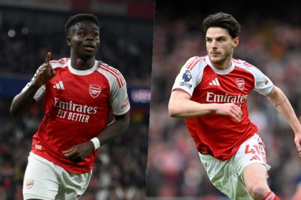
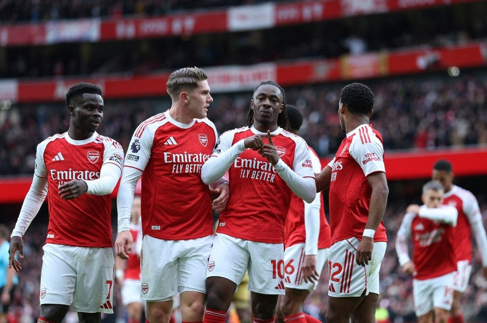

サッカー観戦
法学部の藤本聖那です。
サッカーを見るのが好きで、海外サッカーを中心に見ています。
そのなかでも特に、イングランドのプレミアリーグを中心に見ており、アーセナルFCを応援しています。
このページではアーセナルFCの魅力について話します。
アーセナルFCの魅力３つ
スター選手の豊富さ

写真左は7番を背負う生え抜きのFWブカヨ・サカ、写真右はクラブ史上最高額の移籍金でやってきたMFデクラン・ライスです。
2人ともイングランド代表のスターティングメンバーにも入っており、市場価値は2人とも同率で世界8位となっており、世界で8番目に価値のある選手となっています。
他にも、世界最高とも言われる2人のCBや3年連続でリーグで最も多いクリーンシートを達成しているGKなど、タレント揃いのチームになっています。
未来のスター候補の台頭

写真左から19歳マイルズ・ルイス・スケリー、16歳マックス・ダウマン、19歳イーサン・ヌワネリです。
スターティングメンバーで活躍するスケリー、リーグ史上最年少ゴールを記録したダウマン、リーグ史上最年少での出場を果たしたヌワネリと、これからのスター候補たちが活躍しているのも魅力のひとつです。
純粋な強さ

最後の魅力は何といってもその強さです。
3年連続のリーグ2位、現在は1試合を残してリーグ首位、欧州選手権のチャンピオンズリーグではベスト8、ベスト4、そして今シーズンは決勝に進出とここ数年間は安定した強さを見せています。
このような魅力の詰まったクラブ、アーセナルFC、そして見るものを熱狂させるサッカー、プレミアリーグ、今年はワールドカップもあるのでさらに盛り上がっていくと思います。